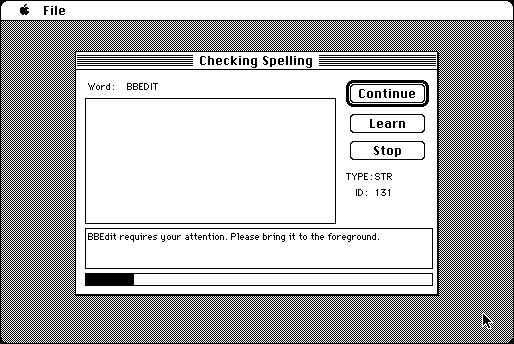

Download
stringchecker1.0.zip (262K) StringChecker 1.0a1 repackaged into a zipped hfs disk image and checksum file. The disk image can be mounted with Mini vMac.
stringchecker1.0.sit.hqx (360K) StringChecker 1.0a1 in the original format.
copyright: Brian Sutter
mod date: Jul 24, 1995
license: shareware
Checks "STR , STR#, DITL, MENU, TEXT, and CNTL resources for spelling errors".

If you find these downloads useful, please consider helping the Gryphel Project, which hosts them.
Here are the md5 checksums for the downloads, signed with Gryphel Key 5:
--------- GRY SIGNED TEXT --------- 8b18b4bd6d56086ae242c18bfe712aef stringchecker1.0.zip e1c2c9e8ac2a05c9268c7b9fc200e6e1 stringchecker1.0.sit.hqx ------- BEGIN GRY SIGNATURE ------- Gry/4Xa8CFcUzxdN/DcxgVwDdfW+3cJcdj2fUv9NyieGNg/8x6FPzIPJhsS0qoci 12g/ebB10CBiF6T50HMzexOilISMOp89BHfT0ZuVyM/JQW9EYroD3+6fvATgvVay KCfpXC3GpdorbKgMLYfR2R3L4s04R0S5rkFZ8VkOqFDysPZjAbmI4xJBpJTGt8SN -------- END GRY SIGNATURE --------